运算符
什么是运算符
-
- 是代码里面进行运算的时候使用的符号
-
JS共分六种运算符：[数学运算符、赋值运算符、比较运算符、
逻辑运算符、自增自减运算符、三目运算符] -
运算符的分类
-
数学运算符
- 除加号外，其他操作数为非数字字符串，输出均为NaN
- 除加号外，其他操作数均为数字(两侧均为字符串也一样)，则转为数字，并计算
-
+号
- 只有符号两边都是数字的时候才会进行加法运算
- 只要符号任意一边是字符串类型，就会进行字符串拼接
- 当值为布尔类型(true/false)，执行加法运算时，会自动将true[1]/flase[0]
-
·演示
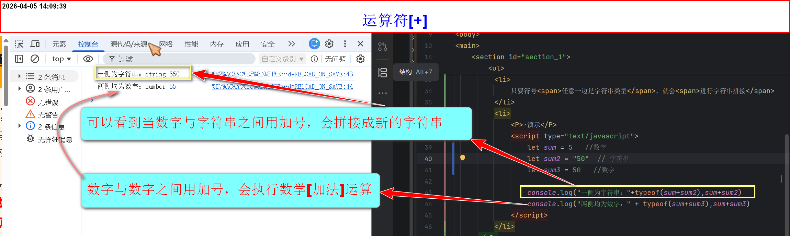
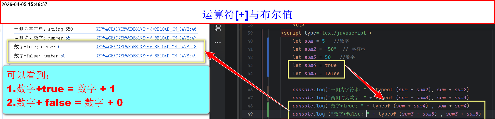
-
-号
- 会执行减法运算(subtraction)
- 会自动把两边(非数字字符串除外)都转换成数字进行计算
- 当值为布尔类型(true/false)，执行减法运算时，会自动将true[1]/flase[0]
-
·演示
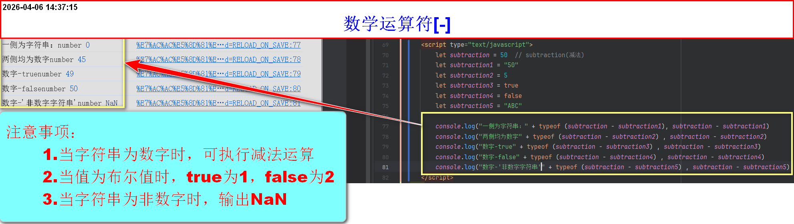
-
*号
- 会执行乘法运算(multiplication)
- 会自动把两边(非数字字符串除外)都转换成数字进行计算
- 当值为布尔类型(true/false)，执行乘法运算时，会自动将true[1]/flase[0]
-
·演示
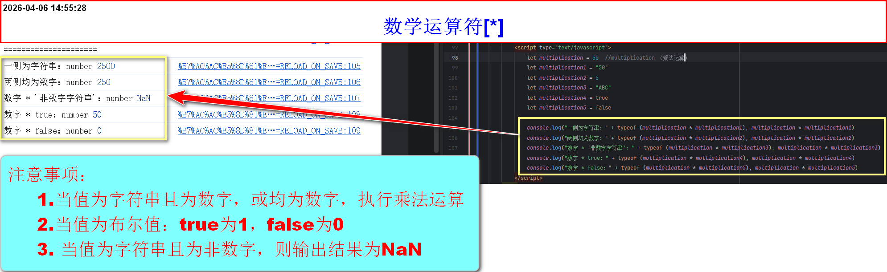
-
/号
- 会执行除法运算(division)
- 会自动把两边(非数字字符串除外)都转换成数字进行计算
- 当值为布尔类型(true/false)，执行除法运算时，会自动将true[1]/flase[0]
-
当操作数为布尔值false的六种情况
- 当
false / 正数，值为[0] - 当
false / 负数，值为[-0] - 当
false / 0，值为[NaN] - 当
正数 / false，值为[Infinity(正无穷)] - 当
负数 / false，值为[-Infinity(负无穷)] - 当
0 / false，值为[NaN(无效数字)]
- 当
-
总结：
0/0 ==→ false / 0 或 0 / false值为NaN非零/0值为±Infinity0/非零值为±0正数/正数[或负数/负数]值为正数正数/负数[或负数/正数]值为负数- 与是否为false无关，只是刚好false被隐式转为0
-
·演示
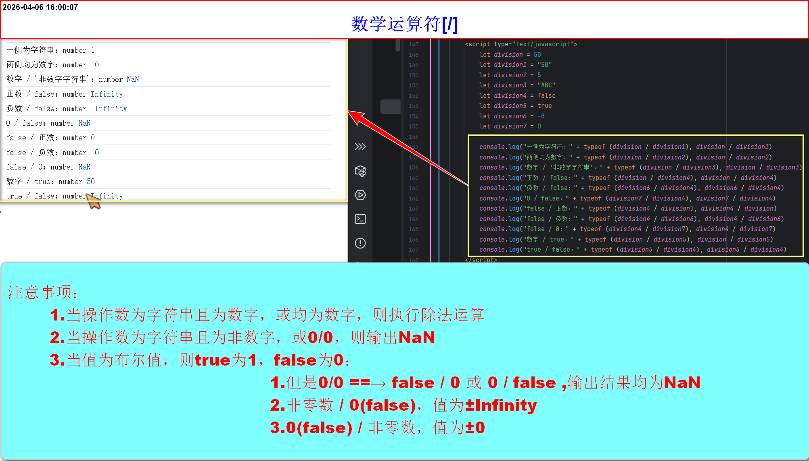
-
%号
- 会执行取余运算(modulo)
- 会自动把两边都转换成数字进行运算
- 取余运算，顾名思义就是取除法运算后的余数
-
注意：
- 当除数为0时：
非零数 % 0，则值为NaN - 当零是被除数时：
0 % 非零数，则值为0 - 当0既是除数，又是被除数：
0 % 0，则值为NaN
- 当除数为0时：
-
·演示
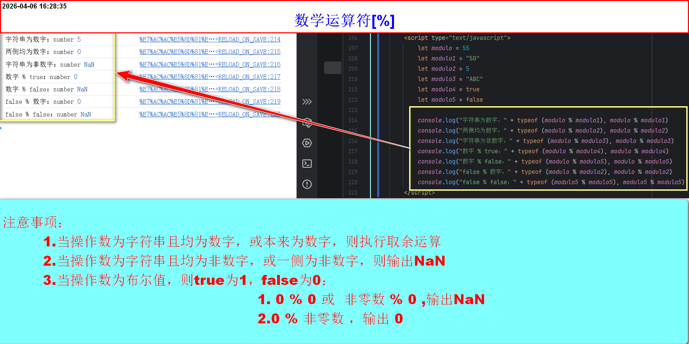
-
综合实例
题目：100分钟是几小时，几分钟
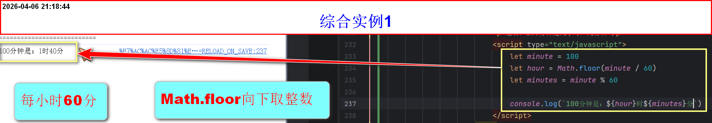
-
赋值运算符
- 注意：相同变量名后面赋的值会覆盖前面赋的值
- 赋值运算符右侧可以是任何数据类型，但是左侧声明的变量名要合法，否则报错
- 不进行任何类型检查或转换
-
=
- 将
=右边的值给等号左边的变量名 - 例如：
var sum = 100 - 就是将 100 赋值给sum变量
- 所以，最后的结果 sum的变量值就是100
-
·图例
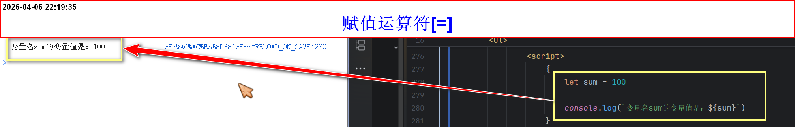
- 将
-
+=
变量名 += 数字其等价于变量名 = 变量名 + 数字-
·图例
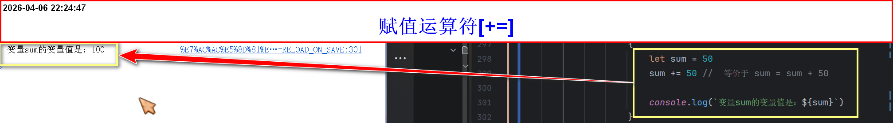
-
-=
变量名 -= 数字其等价于变量名 = 变量名 - 数字-
·图例
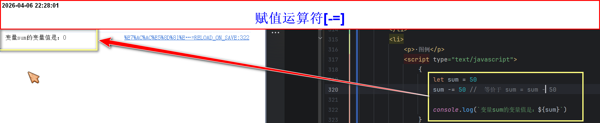
-
·实例(交换两个数的值)
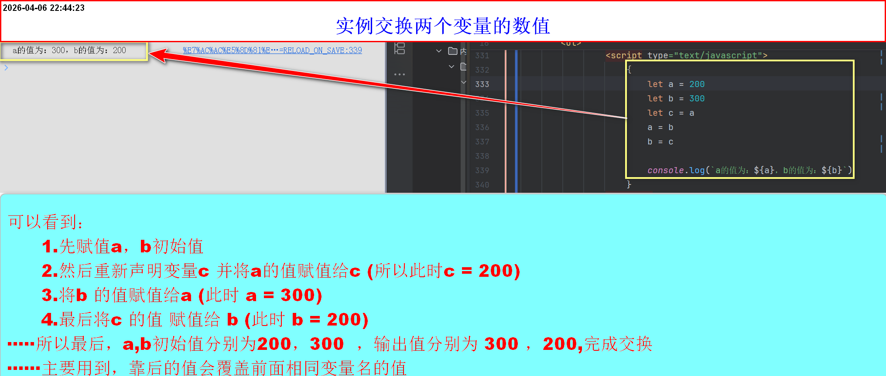
-
*=
变量名 *= 数字其等价于变量名 = 变量名 * 数字-
·图例
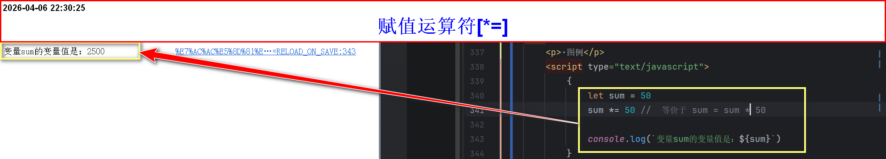
-
/=
变量名 /= 数字其等价于变量名 = 变量名 / 数字-
·图例
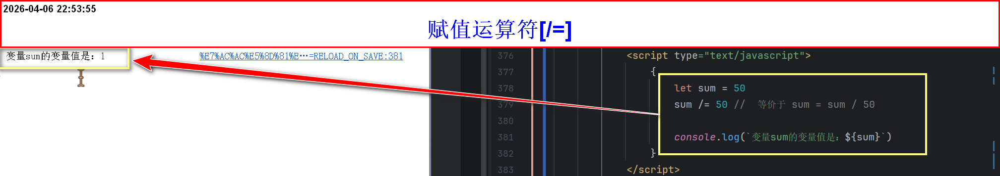
-
%=
变量名 %= 数字其等价于变量名 = 变量名 % 数字-
·图例
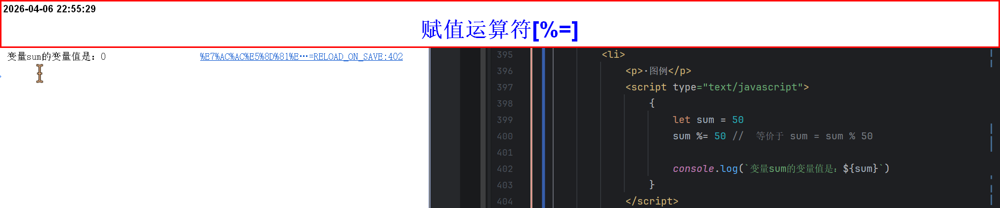
-
比较运算符
- 当两个操作数都是字符串时，进行字典顺序比较
- 字典顺序就是按字符的Unicode码点逐个比较，与数字大小无关。所以进行比较操作数最好都是数字
- 当一个操作数是数字，另一个是字符串时,JS会尝试转为数字，再比较，分三种情况：
- 如果字符串是纯数字字符串，转成数字后比较
- 如果字符串是非数字字符串，转换结果为NaN,比较结果通常是false，(!=除外)
- 操作数均为数字，则直接进行比较
-
相等运算符(==、!=)
-
==
- 比较符号两边的值是否相等，不管数据类型
- 例如：
1 == "1" - 两个的值是一样的，所以得到true
- 正是因为这样比较差异，所以一般不建议用==来比较两侧是否相等，会出现歧义
-
·图例
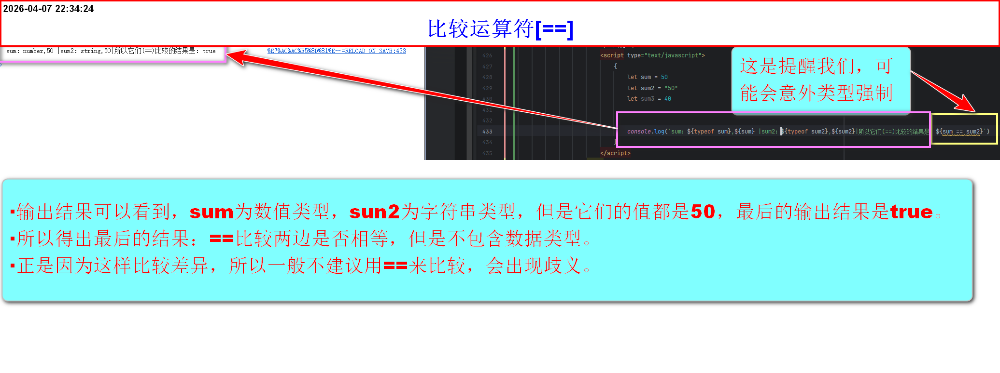
-
!=
- 比较符号两边的值是否不相等,不管数据类型
- 例如：
1 != "1" - 因为两边的值是相等的，所以最后输出结果是false
- 正是因为这样比较差异，所以一般不建议用!=来比较两侧是否不相等，会出现歧义
-
·图例
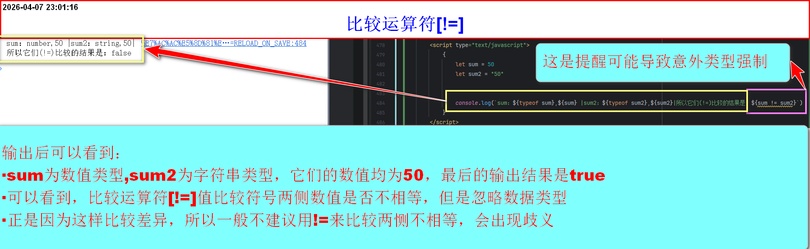
-
-
严格运算符(===、!===)
-
===【严格相等运算符】
- 比较符号两边的值和数据类型是否相等
- 例如：
1 === "1" - 它们值是一样的，但是数据类型不一样，所以最后的返回值值是false
- 正是因为这样的严格比较，所以非常建议用===来比较两侧是否相等，避免出现歧义
- 核心规则：先比较类型，类型不同直接false；类型相同再比较值
-
关于不同操作数数据类型的三种情况
-
类型不同
- 例1：
123 === "123" - 例2：
true === 1 - 例2：
null === undefined - 直接返回false，不进行任何类型转换
- 例1：
-
类型相同，且是基本类型(number\string\boolean\symbol\bigint)
- 比较值是否相同
- 特例1：NaN(一般是非数字字符串转换而成)与任何值(包括自身都不相等)
- 特例2：+0 和 -0 视为相等
-
类型相同，且是引用类型(对象、数组、函数等)
- 比较引用地址是否相同(是否指向内存中的同一对象)，而不是比较结构或内容
- 例如：
{} === {}值为false,因为它们是两个不同对象 - 例如：
let obj = {}
obj === obj
值为true，因为它们同一引用
-
类型不同
-
·图例
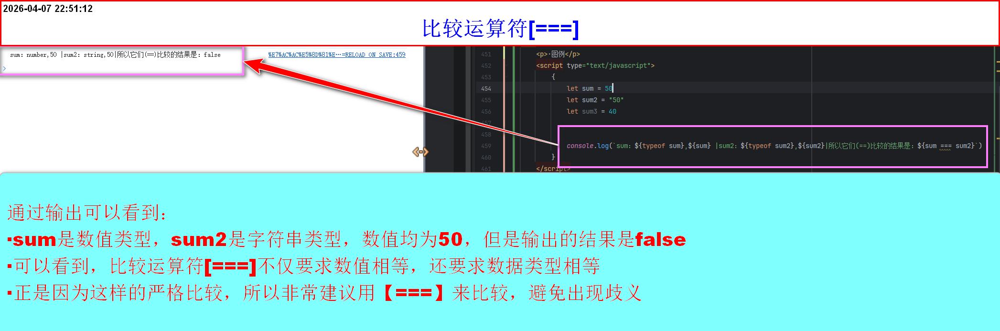
-
!==【严格不等于运算符】
- 比较符号两边的值和数据类型是否不相等
- 例如：
1 !== "1" - 因为两边的值是相等的，但是数据类型不相等，所有最后输出的结果是true
- 正是因为这样的严格比较，所以非常建议用!==来比较两侧是否不相等，避免出现歧义
- 比较规则：先比较类型，类型不同，直接返回true，类型相同，再比较值，值不同则true，值相同则false
-
关于不同操作数数据类型的三种情况
-
类型不同
- 类型不同，直接返回true(因为类型不同，那么肯定不相等)
- 例1：
123 !== "123" - 例2：
true !== 1 - 例2：
null !== undefined
-
类型相同，且是基本类型(number\string\boolean\symbol\bigint)
- 比较值是否不相同
- 特例1：NaN(一般是非数字字符串转换而成)与任何值(包括自身都不相等，所以最后返回值是true)
- 特例2：+0 和 -0 视为相等(所以最后返回值是false)
-
类型相同，且是引用类型(对象、数组、函数等)
- 比较引用地址是否相同(是否指向内存中的同一对象)，而不是比较结构或内容
- 例如：
{} !== {}值为true,因为它们是两个不同对象 - 例如：
let obj = {}
obj !== obj
值为false，因为它们同一引用
- 整体来说，与严格相等运算符相反
-
类型不同
-
·图例
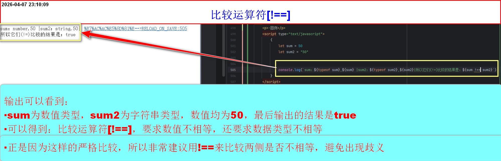
-
-
关系运算符(<=、<、>=、>)
- 当两个操作数都是字符串，字典顺序(Unicode码点)比较
-
至少一侧是数字，分两种情况
- 将另一侧转为数字，再比较数值
- 转换失败(非数字字符串)则为NaN，比较结果恒等于false(除了!=)
- 特殊情况：null、undefined与数字比较时，null转成0，undefined转成NaN
- 布尔值true转为1，false转为0
- 两侧均为数字，正常比较，输出结果即可
- 数字的判断与数学一样，只不过多了数据类型之间的判断(null、NaN、undefined)
-
>=
- 比较符号两边的值是否相等或大于右侧的值
- 是则输出true，否则false
-
·图例
-
<=
- 比较符号两边的值是否相等或小于右侧的值
- 是则输出true，否则false
-
>
- 比较符号两边的值是否大于右侧的值
- 是则输出true，否则false
-
<
- 比较符号两边的值是否小于右侧的值
- 是则输出true，否则false
-
逻辑运算符
-
&&(且)
- 进行且的运算
- 符号左边必须为true并且右边也是true，才会返回true
- 只要一侧不是true，那么就会返回false
true && true最后的返回结果是truetrue && false结果返回的是falsefalse && true结果返回的是falsefalse && false结果返回的是false- 常用于条件判断，需要多个条件同时满足的情况
- 判断是否用[&&]——只要看条件是否有数据同时满足的可能，有，则用且(比如成绩判定区间，这个区间可以被同时满足)
-
·图例
-
||(或)
- 进行或的运算
- 符号两侧有一侧为true，则返回true
- 只有两侧是false，那么就会返回false
true || true最后的返回结果是truetrue || false结果返回的是truefalse || true结果返回的是truefalse || false结果返回的是false- 常用于条件判断，需要多个条件满足其一的情况
- 判断是否用[||]——只要看条件是否有数据同时满足的可能，没有，则用或
-
-
!(取反)
- 进行取反的运算
- 本身是true，变成false
- 本身是false，变成true
!true最后的结果是false!false最后的结果是true-
·图例
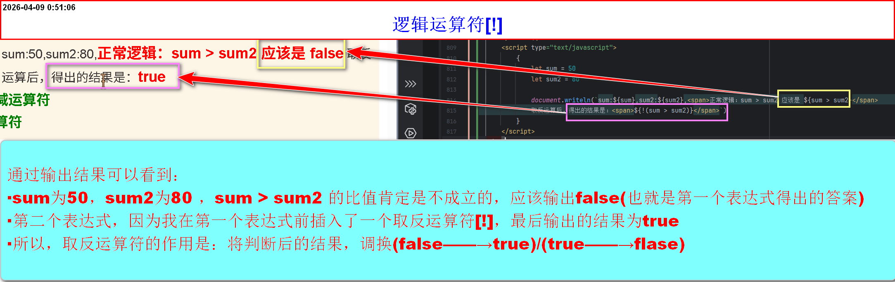
-
-
自增自减运算符
-
三目运算符
-
其他内容补充
-
关于打印引用变量的两种方法
-
字符串拼接法(非常不建议用)
- 语法：
"内容" + "" + "" - 就是将变量值，放在双引号之外，以加号拼接，如果变量在双引号内，会被认为是字符串输出
-
优点
- 极低版本的兼容性(几乎已经完全淘汰了)
- 极其简单的拼接(与模板字符串没啥区别)
-
缺点
- 可读性差：引号、加号、变量混在一起，眼花缭乱
- 易出错：漏引号、少加号、转义麻烦
- 不支持换行：必须
+ "\n" +
- 语法：
-
模板字符串(非常建议用)
- 语法：
`字符串${变量}字符串` - 变量引用方法是${}，大括号内填入变量，其他地方均是字符串
-
优点：
- 不需要反复开闭引号和加号
- 变量名直接${}里，结构清晰
- 支持换行(不用写\n或拼接换行符)
- 可以嵌套表达式${a + b}、甚至调用函数
- 语法：
-
-
Math.floor方法(注意是大写M)
- 向下取整，返回小于或等于一个给定数字的最大整数
- 同样遵守：先乘除后加减
-
关于let声明变量，遇到重复变量名，报错问题
- 已知，let、const声明的变量，在同一作用域，变量名是唯一的
- 不是每个script标签单独一个作用域，而是所有script块(以及内联代码)共享全局作用域
- 解决办法：单独适用大括号(创建块级作用域)